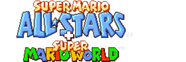
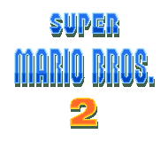
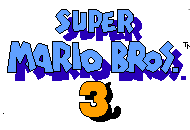

Created by Spencer Everly
If you want to update the episode to enjoy better stability and a better player experience,
Get the SMASUpdater below from here:
https://github.com/SpencerEverly/smasplusplus/tree/main/_smasupdater
Paste and go to the link on a browser of your choice and follow the instructions on the README.txt.
From there you can update the episode as new edits come out! You can alternatively launch it before launching SMBX2.exe as well.
----
Play many games from the past, and play a brand new game made by yours truly!
Games included:
--------

--------

--------
--------
--------
- Super Mario Bros. Spencer
--------
- Me and Larry City: Troubles in Paradise (Side Quest)
--------
- DLC Levels (Made by people, for people!)